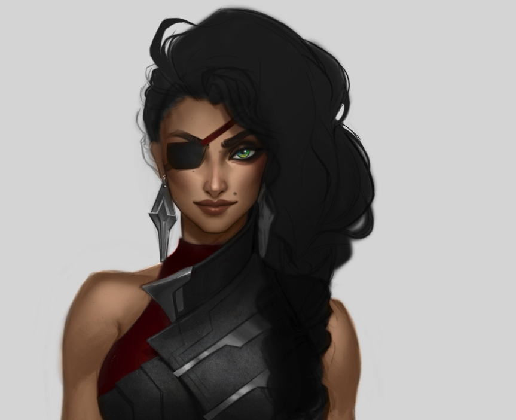
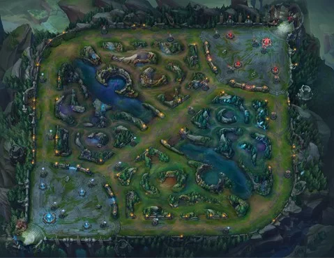
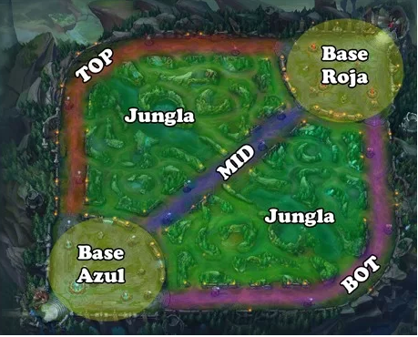
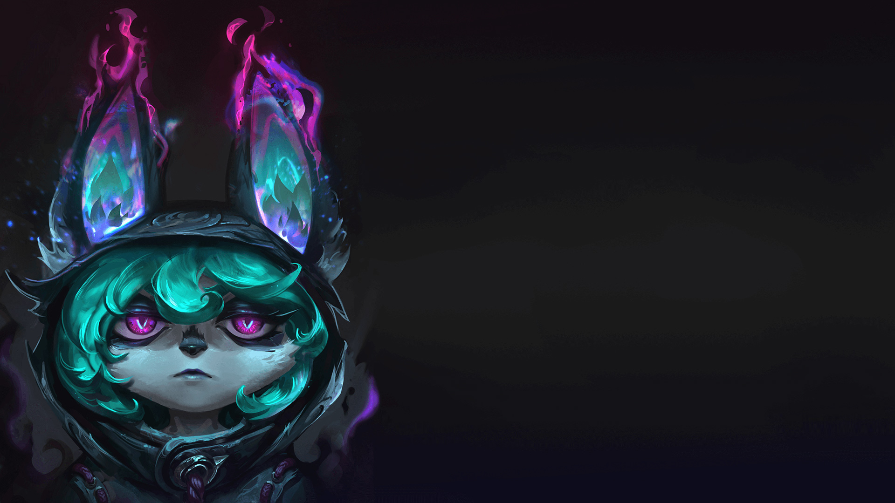

Personajes
Personajes


Aquí os mostraré un resumen de 5 campeones, uno de cada lína explicada anteriormente


A H R I
PASIVA : LADRONA DE ESENCIAS
Ahri se cura tras matar 9 súbditos o monstruos.
Ahri se cura un mayor porcentaje tras derrotar a un campeón enemigo.
Q : ORBE DEL ENGAÑO
Ahri lanza y recupera su orbe, lo que inflige daño mágico de ida y daño verdadero de vuelta.
W : FUEGO ZORRUNO
Ahri obtiene un breve aumento de velocidad de movimiento y lanza tres fuegos zorrunos que siguen a enemigos cercanos para atacarlos.
E : ENCANTO
Ahri lanza un beso que inflige daño y encanta al enemigo que alcance, lo que detiene las habilidades de
movimiento al instante y causa que camine inofensivamente hacia ella.
R : IMPULSO ESPIRITUAL
Ahri se desplaza y dispara rayos de esencia que infligen daño a enemigos cercanos Impulso Espiritual se puede lanzar hasta tres veces antes de entrar en enfriamiento y
obtiene relanzamientos adicionales al derrotar a campeones enemigos.
Esto es un resumen de las habilidades de ahri, jugada normalmente en la Mid
M O R D E K A I S E R
PASIVA : OSCURIDAD CRECIENTE
Mordekaiser obtiene una poderosa aura de daño y velocidad
de movimiento después de asestar 3 ataques o hechizos contra campeones o monstruos.
Q : ANIQUILACIÓN
Mordekaiser golpea el piso con su maza e inflige daño a todos los enemigos alcanzados.
El daño aumenta cuando alcanza a un solo enemigo.
W : INDESTRUCTIBLE
Mordekaiser almacena el daño que inflige y recibe para crear un escudo.
Puede consumir el escudo para curarse.
E : GARRA DEL INFRAMUNDO
Mordekaiser atrae a todos los enemigos en un área.
R : REINO DE LA MUERTE
Mordekaiser arrastra a su víctima a una dimensión distinta con él y roba una parte de sus estadísticas.
Si la mata, conservará las estadísticas hasta que la víctima reaparezca.
Esto es un resumen de las habilidades de Mordekaiser, jugado normalmente en la Top
N U N U Y W I L L U M P
PASIVA : LLAMADA DE FRELJORD
Nunu aumenta la velocidad de ataque y de movimiento de Willump y de un aliado cercano, y hace que los ataques básicos de Willump inflijan daño a los enemigos de alrededor del objetivo.
Q : VORACIDAD
Willump muerde a un súbdito, monstruo o campeón enemigo, lo que le inflige daño y restaura su propia vida.
W : ¡LA BOLA MÁS GRANDE DE LA HISTORIA!
Willump hace una bola de nieve que aumenta en tamaño y velocidad mientras la hace rodar. La bola de
nieve inflige daño a los enemigos y los lanza por los aires.
E : ALUD DE BOLAS
Nunu lanza varias bolas de nieve que dañan a los enemigos. Una vez ha terminado, Willump inmoviliza a
todos los campeones o monstruos gigantes que hayan recibido el impacto de una bola de nieve.
R : CERO ABSOLUTO
Nunu y Willump generan un poderoso torbellino en un área que ralentiza a los enemigos e
inflige un montón de daño al final.
Esto es un resumen de las habilidades de Nunu y Willump, jugado normalmente en la Jungla
E Z R E A L
PASIVA : FUERZA DE HECHIZO CRECIENTE
Ezreal obtiene velocidad de ataque que aumenta cada vez que acierta uno de sus hechizos. Se acumula hasta 5 veces.
Q : DISPARO MÍSTICO
Ezreal dispara un rayo de energía dañino que reduce ligeramente todos sus enfriamientos si impacta a una unidad enemiga.
W : FLUJO DE ESENCIA
Ezreal dispara un orbe que se adhiere al primer campeón u objetivo alcanzado. Si Ezreal ataca a un enemigo con el orbe, lo detona e inflige daño.
E : DESPLAZAMIENTO ARCANO
Ezreal se teletransporta a una ubicación cercana y le dispara un rayo dirigido a la unidad enemiga más cercana. Da prioridad a los enemigos afectados por Flujo de Esencia.
R : DESCARGA DE TIROS CERTEROS
Ezreal concentra su poder para lanzar una poderosa ráfaga de energía que inflige daño masivo a todas las unidades a su paso .
Esto es un resumen de las habilidades de Ezreal, jugado normalmente de ADC
M O R G A N A
PASIVA : SIFÓN DEL ALMA
Morgana drena el espíritu de sus enemigos y se cura mientras inflige daño a campeones, súbditos grandes y monstruos de la jungla grandes y medianos.
Q : HECHIZO OSCURO
Morgana inmoviliza a un enemigo con magia oscura y lo obliga a sentir el dolor que ha causado, lo que le inflige daño mágico.
W : SOMBRA MALDITA
Morgana proyecta una sombra maldita en un área que inflige daño a los enemigos que osen pisar su círculo oscuro. Reciben daño mágico prolongado que aumenta entre menos vida tenga el enemigo afectado.
E : ESCUDO NEGRO
Morgana confiere a un aliado una barrera protectora de fuego estelar que absorbe daño mágico y anula efectos de control de masas hasta que se rompe.
R : GRILLETES DEL ALMA
Morgana desata toda la fuerza de su poder celestial, con lo que desata sus alas y sobrevuela. Morgana ata cadenas de dolor oscuras a los campeones enemigos cercanos y obtiene velocidad de movimiento al moverse hacia ellos. Las cadenas ralentizan e infligen daño inicial. Después de un momento, aturden a los que no puedan romperlas.
Esto es un resumen de las habilidades de Morgana, jugada normalmente de Support